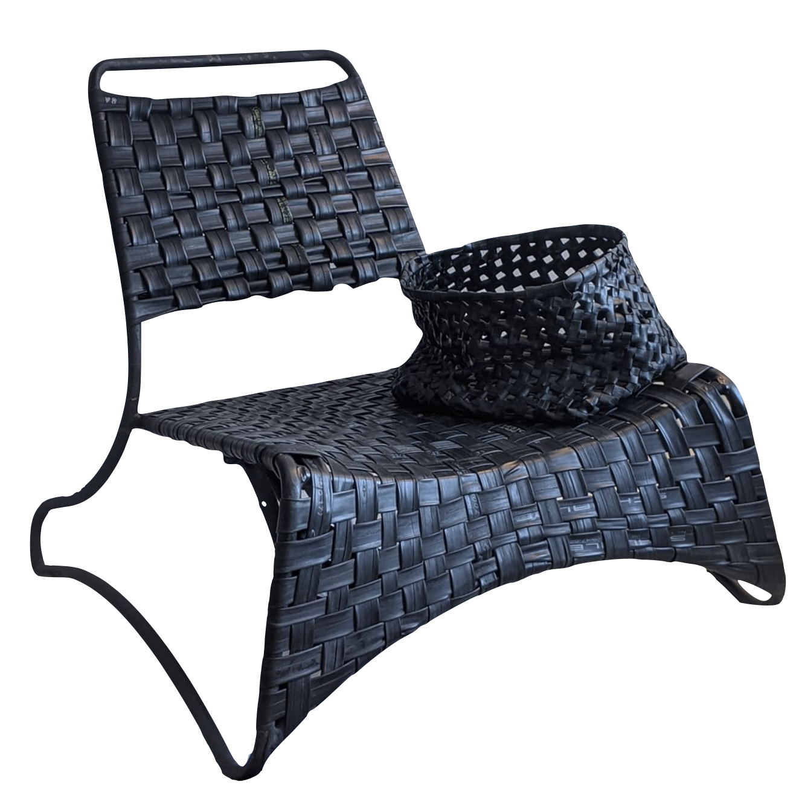

'Les pneus des vélos.' is a series of furniture made from inner tubes from bicycles. I get them from bike shops, mostly free, to up-cycle them. While I have utilized various mediums over the years to create art, I particularly appreciate inner tubes for their elasticity and the leather-like surface. It gives the furniture pieces a special flair, emphasizing a sense of high quality.